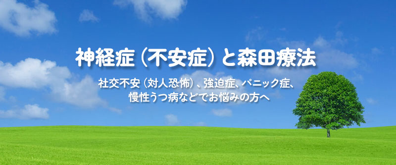
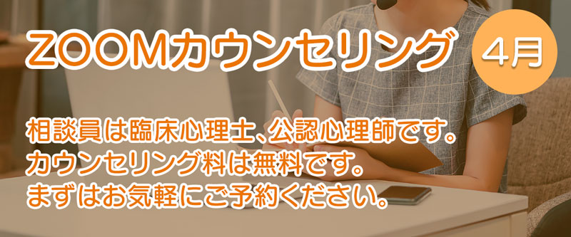
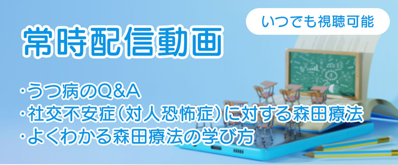
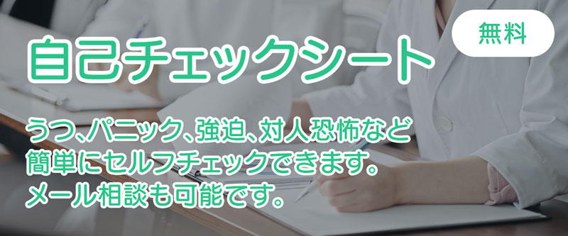

【今日の一言】


心の健康をサポートします
心の健康セミナー配信
神経症やパニック、強迫症、うつ病など不安症の原因や治療に関する様々な情報をセミナー形式で配信しています。特に不安症の治療で実績のある日本の精神療法「森田療法」を中心にその治療法や回復のためのサポートをご案内をしています。また参加型イベントの心の健康セミナーも実施しています。視聴及び参加は全て無料です。
詳しく見る
克服体験や症状別アドバイス
多様な不安症の症状から回復した体験記や会員制掲示板（体験フォーラム）で精神科医や心理士からコメントされたアドバイスなどを掲載しています。うつ病やパニック症、強迫症、病気不安症など様々な症状に対する克服法や症状別のアドバイスが沢山掲載されていますので、同じような悩みを抱えている方は是非ご覧下さい。
克服体験談
症状別アドバイス集
体験フォーラム（会員制の掲示板）
不安症で実際にお悩みの方、もしくは不安症を克服された方が集う相互扶助形式の会員制掲示板です。会員は男女共に約半々で、月に1回東京慈恵会医科大学の精神科医の先生方から各会員に向けてコメントをいただいています。使用料は無料で、掲示板は暗号化で送受信（SSL）され安心・安全に意見交換が可能です。
詳しく見る
森田療法医療機関とカウンセリング
不安症の治療はどこですれば良いのか。そんなお悩みの方のために当方が推挙する医療機関をリストアップし連絡先やWebサイトへのリンクを掲載しています。森田療法を中心とした不安症の治療やお問合せにご活用下さい。また当方と連携する森田療法の外部カウンセリングリストも掲載していますので、ご活用ください。
詳しく見る
図書の閲覧・貸出・ビデオ視聴
当財団には精神分野の専門図書室もあります。森田療法をはじめとする精神療法書籍を約2000冊ご用意していますので、ご自由に閲覧、貸出ができます。また必要であればコピーサービス（有料）もご利用になれます。同時に心の健康セミナーなどで配信しましたビデオは、図書室にて無料で視聴することができます。
詳しく見る
森田療法関連リンク
森田療法の学習・実践を目的とする全国ボランティア組織として生活の発見会や日本森田療法学会、また精神分野の各種団体など、一般市民や研究者を含めた森田療法の普及や啓発、研究活動などに関連するリンク情報です。当財団と親交のある組織やグループのみ掲載していますので、安心してご利用できるサイト集です。
詳しく見る